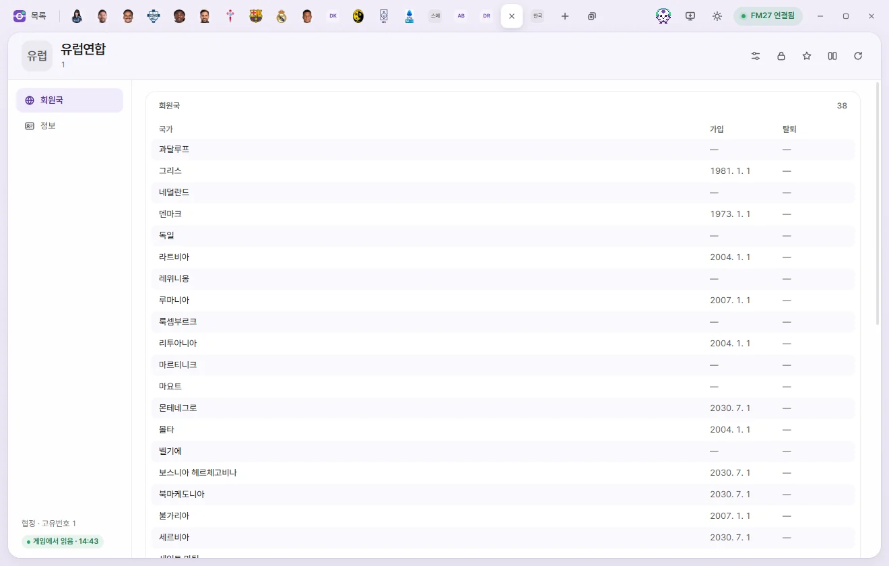
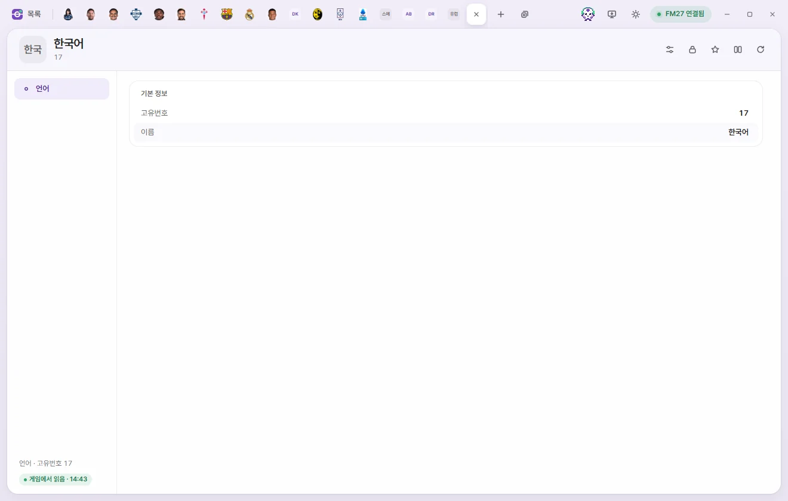

Edit tabs
Agreement & language
View the member nations of an agreement (a group of countries such as the European Union) or inspect an in-game language. Neither tab has any editable values.
Both the Agreement tab and the Language tab are read-only. Because there are no fields to edit, the save bar doesn't appear either.
The top right of both tabs still shows the Presets, Locks, Bookmarks, Compare, and Reload from game buttons—though since there's nothing to edit here, the useful ones are Bookmarks, Compare, and Reload. Player tab header
Agreement


How to open
- Click a name in the Agreements list.
- Click an agreement under Joined agreements on a Nation tab.
Below the name, you'll see its Unique ID and Short name. There are no number cards. It has two subpages: Member nations and Info.
Member nations
Lists every country belonging to this agreement in alphabetical order (Nation, joined date, and exit date). Click any country's name to open its Nation tab.
- Member nations are compiled from each country's own 'Joined agreements' list, so if FMAX hasn't read the Nations list yet, it loads that first.
- Adding or removing member nations isn't supported yet.
Info

Shows the Unique ID, Name, and Short name. All three are read-only.
Language


How to open
Click a name in the Languages list.
Language page
Shows only the Unique ID and Name, both read-only.
To edit a player's or staff member's spoken languages and fluency, use the Language page on that person's own tab rather than the Language tab. Player languages, Staff languages